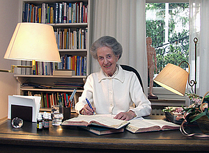
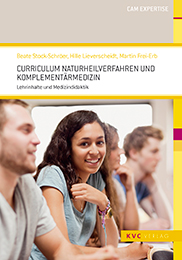
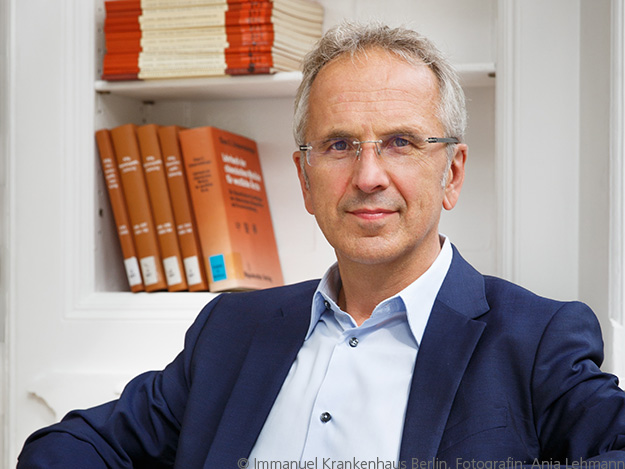

Wir
Der Arzt und die Ärztin der Zukunft sollen zwei Sprachen sprechen, die der Schulmedizin und die der Naturheilkunde und Homöopathie. Sie sollen im Einzelfall entscheiden können, welche Methode die besten Heilungschancen für den Patienten bietet.

Dr. Veronica Carstens
(1923–2012) Ärztin für Innere Medizin und Naturheilkunde
Diesem Leitsatz der Stifterin Dr. Veronica Carstens sind wir verpflichtet.
Seit Jahrzehnten sind Naturheilverfahren fester Bestandteil der Patientenversorgung. Dabei beruhte ihre Anwendung im Wesentlichen auf dem Wissen und der Erfahrung des einzelnen Therapeuten. Die Gründer der Carstens-Stiftung waren überzeugt, dass Naturheilverfahren erforscht und wissenschaftlich untermauert werden müssen.
Die gemeinnützige Karl und Veronica Carstens-Stiftung hat in den letzten drei Jahrzehnten dazu beigetragen, dass immer mehr Verfahren wissenschaftlich durchdrungen und bewertet wurden. Seit 1982 sind mehr als 32 Mio. Euro für Wissenschaft und Forschung in über 300 Projekten aufgewendet worden.
Unser Stiftungszweck wird insbesondere verwirklicht durch die Förderung von Forschungsarbeiten und deren Veröffentlichungen, durch Aus- und Fortbildung von Ärzten und weiteren Angehörigen der Gesundheitsberufe.
Wir konzentrieren uns darauf, Ideen zu entwickeln und Modelle zu realisieren, die zu den Besonderheiten der Naturheilkunde, Homöopathie und Komplementärmedizin passen. Dabei arbeiten wir mit Forschungseinrichtungen auf diesem Gebiet eng zusammen. Die Forschungsergebnisse werden der Wissenschaft zugänglich gemacht. Auch negative Ergebnisse werden konsequent publiziert.
Neben Wissenschaft und Forschung ist die Nachwuchsförderung ein weiteres Anliegen der Stiftung. So unterstützt die Carstens-Stiftung beispielsweise studentische Arbeitskreise und Wahlpflichtfächer für Homöopathie an vielen deutschen Universitäten.

Dazu bieten wir Fortbildungen sowie Stipendien im Bereich der gesamten Naturheilkunde und Komplementärmedizin. Damit Naturheilkunde und Homöopathie auf wissenschaftlicher Basis gelehrt werden können, stellt die Stiftung den medizinischen Fakultäten ein Curriculum und Lehrmaterialien zur Verfügung.
Fördergemeinschaft Natur und Medizin e.V.
Die Erträge aus dem Stiftungsvermögen reichen bei weitem nicht aus, um die vielfältigen Aktivitäten der Stiftung ausreichend zu finanzieren. Ein Großteil der Fördermittel stammt aus den Spenden und Beiträgen der Mitglieder von Natur und Medizin, der gemeinnützigen Fördergemeinschaft der Carstens-Stiftung. Damit sind wir unabhängig von Politik und Wirtschaft und gleichzeitig verpflichtet, effizient und sorgfältig zu arbeiten.
Der Vorstand der Karl und Veronica Carstens-Stiftung
Prof. Dr. Andreas Michalsen
Vorsitzender
Professor Andreas Michalsen gehört zu den führenden Wissenschaftlern in der komplementärmedizinischen Forschung. Seit 2011 ist er Vorstandsmitglied der Karl und Veronica Carstens-Stiftung, seit Februar 2012 ihr Vorsitzender, seit 2010 sitzt er im Vorstand von "Natur und Medizin e.V."
Curriculum Vitae
Andreas Michalsen wuchs im Kneippkurort Bad Waldsee in Baden-Württemberg auf. Sowohl Vater wie Großvater waren dort als naturheilkundlich arbeitende Ärzte tätig. Er studierte in Bochum und Berlin Medizin und promovierte zu einem Thema der Kardiologie an der Universität Bonn.
Zusatzbezeichnungen / Habilitation
Bereits in den 90er Jahren erwarb Michalsen die Zusatzbezeichnungen Homöopathie, Naturheilverfahren. Im Rahmen einer umfangreichen internistischen Ausbildung war er mehrere Jahre in der internistischen Intensivmedizin und interventionellen Kardiologie tätig und wurde Facharzt für Innere Medizin sowie Notfall - und Intensivmedizin. Im Jahre 1999 erfolgte eine Ausbildung in Mind-Body-Medizin an der Harvard Medical School. In den Jahr 2004-2007 erhielt er die Anerkennungen für Ernährungsmedizin, Akpunktur sowie die Zusatzbezeichnung Physikalische Therapie und Balneologie.
2006 habilitierte er sich am Lehrstuhl für Naturheilkunde der medizinischen Fakultät der Universität Duisburg-Essen.
Bad Elster und Essen
Zusammen mit Professor Gustav Dobos baute Andreas Michalsen die Klinik für Naturheilverfahren in Bad Elster, Sachsen, und danach die Abteilung für Innere Medizin, Naturheilkunde und Integrative Medizin an den Kliniken Essen-Mitte auf - einem Modellprojekt des Landes NRW. Bis Ende 2008 war er dort als leitender Oberarzt tätig.
Berlin
Seit Januar 2009 ist Professor Michalsen Chefarzt am Zentrum für Naturheilkunde des Immanuel Krankenhauses Berlin und gleichzeitig - im Rahmen der Kooperation zwischen Charité und Immanuel-Krankenhaus - Inhaber der Stiftungsprofessur für Naturheilkunde der Charité Universitätsmedizin Berlin.
Mitgliedschaften
Michalsen ist Vorstandsmitglied der European Society for Complementary and Natural Medicine, der Deutschen Gesellschaft für Naturheilkunde und der Ärztegesellschaft für Heilfasten und Ernährung sowie Mitglied des wissenschaftlichen Beirates der Hufelandgesellschaft e.V.
Außerdem ist er Mitglied des Dialogforums Pluralismus in der Medizin an der Bundesärztekammer, Sachverständiger bei der Arzneimittelkommission der Bundesärztekammer sowie Fachschriftleiter der Zeitschrift "Forschende Komplementärmedizin" und Herausgeber der "Zeitschrift für Komplementärmedizin".
Prof. Dr. Andreas Schlüter
Stellvertretender Vorsitzender
Prof. Dr. Andreas Schlüter ist Generalsekretär des Stifterverbandes für die Deutsche Wissenschaft und seit 2006 Vorstandsmitglied der Carstens-Stiftung. Als Generalsekretär führt er die Geschäfte der Hauptverwaltung des Stifterverbandes und verantwortet dessen operative Tätigkeit. Seit Anfang 2005 hat Prof. Dr. Andreas Schlüter dieses Amt inne.
Schlüter (Jahrgang 1956) studierte Jura und Betriebswirtschaftslehre. Noch während seiner Promotion stieg er 1986 beim Bertelsmann-Konzern ein, zunächst als Assistent des Vorstandsvorsitzenden. 1988 wurde er Personalreferent und im darauffolgenden Jahr Personalchef der Bertelsmann Industriegruppe. Zusätzlich führte er von 1992 als kaufmännischer Leiter die Mohndruck Graphischen Betriebe.
Von 1995 bis 2000 war Schlüter Erster Geschäftsführer der Bertelsmann Stiftung.
Im Jahr 2000 trat er als Rechtsanwalt in die Sozietät Brandi, Dröge, Piltz, Heuer und Gronemeyer ein. Das Thema Stiftungen und internationales Stiftungsrecht blieb weiter auf seiner Agenda. Schlüters 2003 angenommene Habilitationsschrift thematisierte das "Stiftungsprivatrecht zwischen Privatautonomie und Gemeinwohlbindung".
Seit 2003 lehrt Schlüter an der Rechtswissenschaftlichen Fakultät der Universität Köln, zunächst als Privatdozent, von 2008 an als außerplanmäßiger Professor.
2004 wurde er Generalsekretär des Goethe-Instituts, um nach einem Jahr die Position des Generalsekretärs beim Stifterverband einzunehmen.
Dr. Anna Paul
Dr. rer. medic. Anna Paul, Diplom Sozialpädagogin mit Spezialisierung auf Erwachsenenbildung und Theologie, hat Zusatzqualifikationen im Psychosomatischen Gesundheitstraining auf der Grundlage von Yoga und Ayurveda sowie in der Komplementärmedizin. Mit dem Thema "Die Auswirkung eines multimodalen Lifestyle-Programms auf das Gesundheitsverhalten von Patienten mit koronarer Herzerkrankung" promovierte sie an der Universität Witten-Herdecke.
Seit Anfang der 90er Jahre ist Frau Dr. Paul in der Naturheilkunde tätig und leitet seit 1999 den Bereich Ordnungstherapie, Mind/Body Medicine sowie die Forschungsgruppe Prävention & Gesundheitsförderung in der Abteilung Naturheilkunde und Integrative Medizin im Knappschaftskrankenhaus an den Kliniken Essen-Mitte. Seit Ende 2011 ist Dr. Anna Paul Vorstandsvorsitzende des Fördervereins der Carstens-Stiftung "Natur und Medizin e.V." und ganz im Sinne von Frau Dr. Carstens hat bei ihr die seelische Komponente – bei Gesunden wie Erkrankten – einen hohen Stellenwert: "Ich stehe mit Leib und Seele hinter der Idee von Natur und Medizin. Meine ganze berufliche Entwicklung ist Zeuge davon: So ist es mir immer schon ein inneres Bedürfnis gewesen, die natürlichen Kräfte des Menschen zur Heilung und Gesundheit zu fördern."
Frau Dr. Paul ist seit 2012 Leiterin der Integrativen Onkologie in den Abteilungen Senologie, Hämatologie und gynäkologische Onkologie der Kliniken Essen-Mitte. Zudem leitet sie Forschungsteilprojekte, die vom Bundesministerium für Bildung und Forschung gefördert werden: ViLMa (Lebensstilveränderung für Menschen mit virtuellem Arbeitsplatz), PräGO (Präventives Gesundheitsmanagement durch integrierte Personal- und Organisationsentwicklung), UbeG (betriebliche Gesundheitsförderung in Mittelständischen Handwerksbetrieben), KreaRe (Kreativität älterer Mitarbeiter/-innen durch Ressourcenmanagement aktivieren und erhalten) und Refo (Ressourcenschonendes Arbeiten in der industriellen Forschung und Entwicklung).
Als Dozentin ist Dr. Anna Paul an der Universität Duisburg-Essen und der Ruhr-Universität Bochum sowie bundesweit in der Weiterbildung von Ärztinnen und Ärzten für Naturheilkunde tätig.
Dr. Markus Wiesenauer
Dr. Markus Wiesenauer ist seit 20 Jahren in eigener Praxis tätig als Facharzt für Allgemeinmedizin mit den Zusatzqualifikationen Homöopathie, Naturheilverfahren und Umweltmedizin. Er gehört dem Vorstand der Carstens-Stiftung seit 1996 an.
Für seine wissenschaftlichen Arbeiten wurde Dr. Wiesenauer mehrfach ausgezeichnet, u.a. mit dem Alfons-Stiegele-Forschungspreis für Homöopathie.
Er war langjähriger Vorsitzender der Arzneimittelkommission D sowie der Homöopathischen Arzneibuch-Kommission (HAB) am Bundesinstitut für Arzneimittel und für Medizinprodukte (BfArM).
Dr. Wiesenauer hat mehr als 200 Arbeiten und über 25 Bücher zu den Themen Allgemeinmedizin, Phytotherapie und Homöopathie geschrieben, seit Jahren hält er Vorlesungen für Ärzte und Apotheker sowie Vorträge für interessierte Laien.
Die Geschäftsführung
Nicole Germeroth
Nicole Germeroth, M.A.
Karl und Veronica Carstens-Stiftung
Am Deimelsberg 36
45236 Essen
Telefon: 02 01 - 5 63 05 - 0
n.germeroth@carstens-stiftung.de